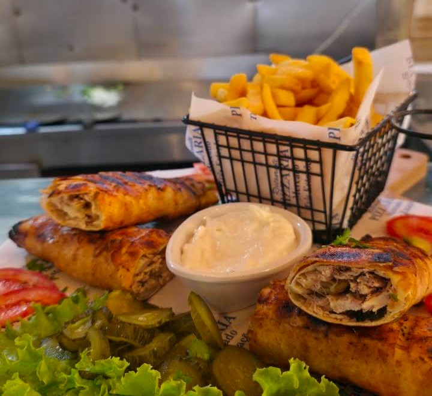

01PARA COMEÇAR
Pequenos prazeres
Uma introdução à experiência, feita para partilhar.
UMA EXPERIÊNCIA GASTRONÓMICA
SABOR · CULTURA · ENCONTRO
Mais do que uma refeição, uma experiência para desfrutar sem pressa.
Descobrir a experiência ↘O PRAZER ESTÁ NOS DETALHES
Boas conversas, sabores marcantes e o prazer de partilhar. Tudo começa quando nos sentamos à mesa.
A MESA ESTÁ À TUA ESPERA
Três Estações — uma experiência por descobrir.
Voltar ao início ↑